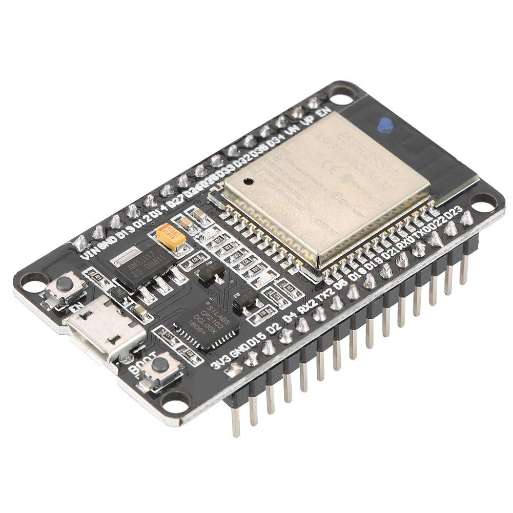
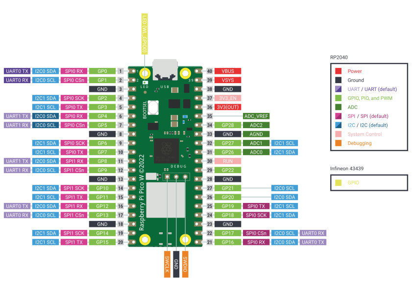

Dispositivos
En este pequeño taller, vamos a centrarnos en dos dispositivos:
- ESP32
- Raspberry Pi Pico
Cada uno de estos microcontroladores, es compatible con MicroPython y con otros muchos lenguajes y herramientas.
Ambos microcontroladores permiten ser programados en muchos lenguajes como puede ser C, Arduino, Node.js y por supuesto en MicroPython. Son muy sencillas de utilizar y tienen mucho soporte por la comunidad.
Vamos a ver cada una de estas placas para conocer sus características.
ESP32

La ESP32, es un microcontrolador de espresiff, que es muy versatil y tiene mucha potencia comparado con otros microcontroladores de la misma familia.
Tiene soporte para muchos lenguajes, pero en este caso lo utilizaremos para MicroPython.
Entre sus características estan:
- CPU: microprocesador de 32 bits a doble nucleo operando a 160Mhz o 240Mhz.
- Memoria: 520KB de SRAM
- Conectividad inhalámbrica:
- Wifi: 802.11 b/g/n
- Bluetooth: BLE y v4.2
- Interfaces:
- 2x 8 bit DAC
- 4x SPI
- 3x UART
- 2x I2C
- 12 Bit ADC
Puede encontrar más información sobre esta placa en:
https://es.wikipedia.org/wiki/ESP32
Mostramos ademas el PInOut de la ESP-wROOm:

Rasperry Pi Pico

Raspberry Pi Pico, es una placa programable basado en el microcontrolador RP2040; diseñado para esta placa. Permite ser programada por varios lenguajes y entre ellos micropython.
Existen varias versiones de esta placa ya que algunas incluyen wifi y otras no.
Las versiones que podemos encontrar son:
- Raspberry Pi Pico (H)
- Raspberry Pi Pico W (WH) con conexión inhalámbrica.
Las características de esta placa son:
- Procesador Dual-core ARM Cortex M0+ hasta 133Mhz.
- 264KB de RAM y 2MB de memoria Flash
- USB 1.1 como dispositivo y como host
- 26 GPIO
- 2xSPI, 2x I2C, 2x UART 12 Bit ADC y 16 canales PWM.
- Conexión Wifi con soporte WPA3 (Sólo Raspberry Pi Pico)
Puedes encontrar más información sobre Raspberry Pi Pico en su página oficial:
Dejamos además, el Piout de una raspberry Pi Pico
Raspberry Pi Pico

Raspberry Pi Pico W
